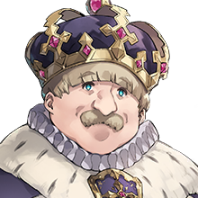

「異国のコインは答えました」
「そういった夢をもてる時点で
キミはじゅうぶんにリッチだ」
「キミが貧しい気持ちでいるのは
それに気づかないままだからだ」
「異国のコインを磨いてごらん
そうすれば──…」

…──「誰かが話を聞きに来る」

「異国のこと、一生懸命な貴方のこと
他愛無いおしゃべり、コインをきっかけに」
「キミにお似合いの誰かが」
「キミの想いに
………ずっと思い出そうとしてた
話のおわり
異国のコインは答えました
View script in lua|  |
【レオデグランス】 「異国のコインは答えました」 |
| 【レオデグランス】 「そういった夢をもてる時点で キミはじゅうぶんにリッチだ」 |
|
| 【レオデグランス】 「キミが貧しい気持ちでいるのは それに気づかないままだからだ」 |
|
| 【レオデグランス】 「異国のコインを磨いてごらん そうすれば──…」 |
|
|
【ギネヴィア】 …──「誰かが話を聞きに来る」 |
|
【ギネマウア】 「異国のこと、一生懸命な貴方のこと 他愛無いおしゃべり、コインをきっかけに」 |
|
【ギネヴィア】 「キミにお似合いの誰かが」 |
|
【ギネマウア】 「キミの想いに |
|
【ギネヴィア】 ………ずっと思い出そうとしてた 話のおわり |